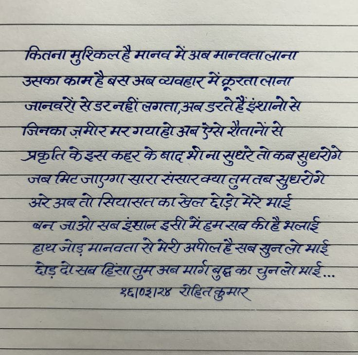

File: hin_sample_16.jpg

—TRAT FRBAS MAL HAT MATA AA SUT BAE FLAT TARA RUT 77 SUT ASCE TH HA SLA SMI 7 STRAT HS AL TMH PATA OCT SB SEAL BE UU LIMBA TL RL THE PIU LU ARAL HAL GTI BRAT AT AMR ATT BST US RT UG AA Mt EM HEH AT Ble AMS 7 SITUS ATM AT ANAS AA YAU RS AEM GH FA HUGE TAM LE 77 ere sar ee ee
So Pe oe Seer ice aa Semele लि छअब जा. oo a ee vos, * . eo TE Bl eR PT ST gufetecs SSIS cad er at re a ~ poo Doge Tests ये SETRE A Ede ee Fe dF . wee eet OEE Cie) 20 GARTER SS के re यु wets 7 eed Poss an “: . हा जाओ Sy OT तय ant ay en 0. 5 Chine le ne २० ० ar sotat आओ ol SPD GaSe BSS SRE ye SL RED बट S poe WLC GWE ea Sf test BE ONT SES फिर WE. Catt ere 7 7 ~ aa AYE Te Taye vet tastn gsi) SS ke a ae tad > 5 Te rn tee SAE GENE ong aa HSS HI Fe मानवता बिल गए उतनन- पट ER te RRA Sh ae Re BT late PE oe PEE AT 9, SS 725 कर 5 SS Sere SAE oe > . 224 230 2०-32 KD SiN Sty re Re Sh eee REN 5 a ber ES SNES RS ete हु ० टच: 27 कया: SESS Sar OR ere 7 7 | SIDI हिक्ए व्यवहार व्रत टन 7 प्लान न या माया मजा: मध्य रण लि Re 5, ITN As! Qaas¢ ri aay ad ९:5० 47/८7/0646 ; QOS cl MLE Oo te ua OEE नह by ARES 2 Cas ea SEES SSS SGN a ता न 5 ८ : Rae arse SL डक डा ORE SA REFUSAL Pe पिया Bo Ee ey RS AS eet 2.7 SR SEES Sa REL Ae RE 2 ४०७७ EEO EO 5 ae CERISE ARE VERA Ske SUM 7 हिट (7 ne NS eek re PIRI ENS Cte MASS MR on Mee आह « fen COPY SACI en TER a ris Sd panty Pee ean a eee eS "कप >+ ~— Se sie ee “hh 3 Sale sate Be CaS Ae abe Tae Pee a es ee ESET a EE RAE OSE A QE FO RET oa EES BPS ET SE 20022 एल: Ye 7057० MES २८९ OOS Bb i ee ‘i Lip KAR eT TS. SO LEMS be fu Aso SNe. enter = Org Fen FSS Seg ५०५ eh GN OG ae te DE SD ae ANE ges teed re Ss जाप, 3 एप: See oe OA Aare Fe ५-६५, RS Be ere td Ee ee २० CEN RS SENS SS RR EE ES SR Ce SA See फयद लि पं: ८7: ५. SEES ATE RS Se a es SO A Ta Se ee eg ०२०: ० eas OSS CAS MEST AS BAL COTE NK ~ 2, ६५, Sea ER Son सा एन धर ORES न गे Ra ene da NW Unig tame ऊँ का SSE rg सफल 5 EPR RSS ENS ee co SR SE NO See POLES URC AUREL HAL SELIG TSE at SO RET Ee EE SRE ee a प् SSF OA OLE CA CII A CLEMO. CELE MAME CIE FMF ELC PASS SAE et ot भा 70) 25:27: AS ES Soh EN re et SoS ote SARE GS es OOS SEES Se SI OI ESAS RR EI SRS CUNO tee CEST TENT SAS, PA 5 weg TT ln LE SE AO, RUT SEES SSE SSeS ANS TE TS ee gE 5 ERS AS ae eT re NSS oS AEE ESA SN QRS Ee फटने ५ 3 मय -प्य्न्स्य्ट + alll cf (Ka ED ER OME lEEL, Sage Te, ES OF ORES MS AS Sa rat ek ete cen ag pen tn en आधा ao जन DRED CESS Se SS RS EES tS ew Seen ea cae ta Seer wae 5००० Es ret TAP ५ 5२४ We GU a Sele SM EATS HA SRL RC IE ig rs ey rs Cle SPEED Read EG RN RE SIE YI ERR एल ८ ET ८५77 we hy Bee SE LPN EES ०८220 ae te BAT NLR OR RE ae ST A) Srl nat means Oe es an ry Sh: Ted bls Pe a PF wees tn “str eee eA ARS Ay SS 28 Te ene ee ४ 72 eT Nee नाक RE ne, ele pe TTL OMAR ETRE RRS SAE ee eR Sng, 0 ea ona hy ता erie DARA ER EE ne sae OES 7-5 Ww SBT Sts He IETF 8 AGATE ‘2 atk, BETIS RET SR aR CSS ia 97६ as SES Say Soh one BO SOR IS Te TSE oh नाथ SE 7 2० DEGREE RON POR AS SRE AEE ea nS पा ERE UL US MAA MRL HUME AL ARTE Ty ATMS oi 9०: ee, ४४८०० पटक Se De Se) on Seer मन Be ee ne eee 22, TS as) Say VEER SEI BR EE SETS COSA EA a een Mahe -। ० eR ARSE Se 72 2 0260 0: RR a RA ee टक पय =e vee wae 4 AFC HEGEL SAE DSTA CL AEA ee vs ote ESTAS es 53 SNOOP 07 5८५2०: ०८:०5 ला NSD नाक a eis ieee पल ee oe SE ा5 Ae ERE IE >> lene OSE Ege wisp eBG[OS(RE. CCPH Rates ee ः eee a pith bates See is eee a raed oD कऑज ak AR COT SSRN A DUNS एफ eet RSP eee aah ६ eo te soe ae मय ना EE EE ee 7 Oy BoE TO SS ane TE php ny) ERTS wee UO Tats Morte. Jeane रा TA । a fe Dos Cres ais Sts le UD oe en Pee ag Se PS ES, gE ep apn MT ES : aan Me stg मनाए, TS SEAMEN ‘= , os woe soy Meg (ta LS tie TNA, LONE SIND eee Pecan J) et ohana ee oe ee या जम मर Te eRe का:
उसका लाना मिट जाएगग् सारा संसरक्या जब जाओ सब इंस्ान् इसो मं्हमसब करहै मलाई वन मानवता हाथ मार्गबुद्ध चुनलेे माई . दोड़ देपसब हिंसातुम अब का
❌ OCR Failed
१९४६
कितनामुर्िकलहे माजवनअजनान। बइियी कार्डकरजरयर्षर्इखषन जनकटरइीईटनइरबईपटहरईयानरईी जिज्बहकरमरपवादगर ईन्सरीतनएईी रदारारैहर-पैरार्रैरारा दुधर्टएकब डहधि जावरणइटखारयाडडवर ई्घवी-गिचेंट अररआयजत सिया्काखज् ड़ ४ द भर्ई सरपपआरईी यि इिंड हर नी ०० रहैश्यलाई गथजईमानपी ल गर-ुजपाड बआ जरेभाई १३ छर-ब ईं हे शरब मएर्रेबुद्धकर चुनजएआई इद्वषिुट्रा-चुठ पहित् कुव्र
कितनामुशिकिलते बमानवतालाना उसफाफामहैब ज़नकरोंसेंडरन बसभबव्यवहारम मैंकरतालाना इरतेहैंचानोसे त्रकृतिरेइ्सक मिनकाज़मीरमर इसकहरकेबादक एरगयाहोअनउस बसेरौतानॉंसे नासुधरतोकबुध शताकबसुधरोगे अरेअबतोसि बबमिटजाडगास सभबतोसियासत एजएगसाएस गोसियारतकारंड एासाएसंसाक यासतकांरलाहां लहोडाोमेरेभाई ममतबसुधरोगे बनजाओसबह हायजाड़मानवत दसीमैहमसब्की षबकीहैमलाई हैभलाई घोड़दोसब यजाड़मानवतारें हिंसानुमजबमा। एसमेशीअपीलहैक बवमार्गबुधकाधुन जहेसबसुनलोभाई षबसुनलोभाई चुनलोभाई राष्शरगश धणहररहिलकुम रोहितकुमार